측량및지형공간정보산업기사 (2009-05-10 기출문제)
1과목: 응용측량
1. 클로소이드에 관한 설명 중 틀린 것은?
- 클로소이드는 나선의 일종이다.
- 클로소이드는 종단곡선으로 많이 활용된다.
- 모든 클로소이드는 닮은 꼴이다.
- 클로소이드는 곡률이 곡선의 길이에 비례하여 증가하는 곡선이다.
(정답률: 알수없음)

2. 경관구성요소에 의한 구분에서 설명이 잘못된 것은?
- 인식대상이 되는 대상계
- 대상을 둘러싸고 있는 경관장계
- 인식의 주체인 시점계
- 전경, 중경, 배경의 상대적 효과인 상대성계
(정답률: 알수없음)
3. 터널측량을 실시할 때 작업순서로 옳은 것은?
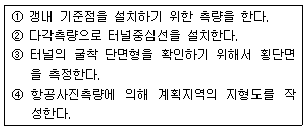
- ② → ④ → ① → ③
- ② → ① → ④ → ③
- ④ → ① → ② → ③
- ④ → ② → ① → ③
(정답률: 알수없음)
4. 하천측량을 실시하는 주목적은?
- 평면도, 종단면도를 작성하기 위하여
- 하천 공작물의 계획, 설계, 시공에 필요한 자료를 얻기 위하여
- 하천공사와 공비를 산출하기 위하여
- 하천의 수위, 경사, 단면을 알기 위해서
(정답률: 알수없음)
5. 한 변의 길이가 10 m 인 정방형을 축척 1/300 도상에서 측정한 경우 면적오차는 몇 % 가 되겠는가? (단, 변의 측정오차는 도상에서 0.2 ㎜ 임)
- 0.6 %
- 1.2 %
- 6%
- 12 %
(정답률: 64%)
6. 다음 중 완화곡선에 해당하는 것은?
- 복심곡선
- 반향곡선
- 배향곡선
- 3차 포물선
(정답률: 알수없음)
7. 하천의 횡단면 직선내의 평균유속을 구하는데 2점법을 사용하는 경우 옳은 것은?
- 수면에서 수심의 1할, 9할의 점에 의한 유속을 측정하여 평균한다.
- 수면에서 수심의 2할, 8할의 점에 의한 유속을 측정하여 평균한다.
- 수면에서 수심의 3할, 7할의 점에 의한 유속을 측정하여 평균한다.
- 수면에서 수심의 4할, 6할의 점에 의한 유속을 측정하여 평균한다.
(정답률: 알수없음)
8. 토공 작업을 요하는 노선의 종단면도에 계획선을 넣을 때 고려해야 할 사항으로 틀린 것은?
- 계획경사는 될 수 있는 대로 요구에 맞게 한다.
- 경사와 평면곡선을 될 수 있는 대로 병설하고 제한 내에 있도록 한다.
- 절토는 성토와 대략 같게 되도록 한다.
- 절토는 성토에 이용이 가능하도록 운반 거리를 고려한다.
(정답률: 알수없음)
9. 다음 중 면적계산에 있어도 도면에서 곡선으로 둘러싸여 있는 지역의 면적을 구하는 방법으로 가장 적당한 것은?
- 좌표법에 의한 방법
- 배횡거법에 의한 방법
- 삼사법에 의한 방법
- 심프슨법칙에 의한 방법
(정답률: 알수없음)
10. 철도에서 곡선부의 레일 바깥쪽을 높게 하는데 이를 무엇이라고 하는가?
- 캔트
- 슬랙
- 확도
- 전도
(정답률: 알수없음)
11. 다음 중 단곡선 설치에 있어서 정확도가 비교적 높아 가장 많이 사용되는 방법은?
- 진출법
- 지거법
- 중앙종거법
- 편각법
(정답률: 알수없음)
12. 하천측량의 골조측량 중에서 삼각측량과 다각측량에 관한 내용중 틀린 것은?
- 삼각망은 주로 유심삼각망을 많이 이용한다.
- 다각망의 기준점 간격은 약 200 m 정도로 한다.
- 다각망은 삼각점을 기점과 종점으로 하는 결합 다각형으로 한다.
- 하천의 합류점, 분류점 등은 높은 정확도를 위해 사변형삼각망으로 하는 것이 좋다.
(정답률: 알수없음)
13. 단곡선에서 곡선반지름 R = 100 m , 교각 I = 30° 일 때 중앙종거(M)은 얼마인가?
- 26.79 m
- 52.38 m
- 3.41 m
- 3.53 m
(정답률: 알수없음)
14. 그림과 같이 △ABC 의 면적을 1 : 2로 분할할 때의 AD의 길이는 얼마인가? (단, BC 와 DE 는 평행이고,
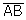
= 164.54m ,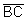
= 156.46m ,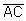
= 135.20 m 이다.)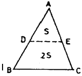
- 54.85 m
- 90.33 m
- 95.00 m
- 134.35 m
(정답률: 알수없음)
15. 그림과 같이 노폭이 6 m , 성토가 2 m , 성토 경사가 1 ; 1.5인 성토구간 20 m 의 토량은 얼마인가?
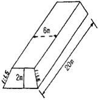
- 293 m3
- 360 m3
- 400 m3
- 460 m3
(정답률: 알수없음)
16. 다음과 같은 터널에서 AB 사이의 경사가 1 / 250 이고 BC 사이의 경사는 1 / 100 일 때 측점 A와 C 사이의 지반고 차이는 얼마인가?
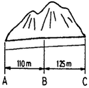
- 1.690 m
- 1.645 m
- 1.600 m
- 1.590 m
(정답률: 알수없음)
17. 댐 외부의 수평변위에 대한 측정방법으로 가장 부적합한 것은?
- 삼각측량
- GPS 측량
- 시거측량
- 삼변측량
(정답률: 알수없음)
18. 3변의 길이가 각각 25.4 m , 40.8 m , 50.6 m 인 구역의 축척 1/500 지형도에서의 면적은 몇 cm2 인가?
- 0.002
- 2.7
- 20.6
- 27.2
(정답률: 알수없음)
19. 하천의 수심 및 유수부분의 하저 상황을 조사하고 횡단면도를 제작하기 위한 측량은?
- 육분의측량
- 심천측량
- 후방교회측량
- 전방교회측량
(정답률: 알수없음)
20. 갱내 천정 B 에 수준점을 측설하기 위하여 갱내 고저측량을 실시하였다. B점의 지반고는? (단, A점의 지반고는 27.216 m 임)
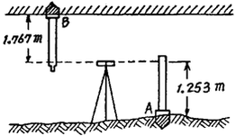
- 84.196 m
- 86.702 m
- 87.730 m
- 90.236 m
(정답률: 알수없음)
2과목: 사진측량 및 원격탐사
21. 다음 중 벡터형 자료에 대한 설명으로 옳지 않은 것은?
- 도형의 표현은 점ㆍ선ㆍ면 으로 한다.
- 일반적으로 자료의 양이 많다.
- 그래픽의 정확도가 높다.
- 레이어 간의 중첩이나 분석이 용이하다.
(정답률: 알수없음)
22. 원자력발전소의 온배수 영향을 모니터링 하고자 할 때 다음 중 가장 적합한 위성영상 자료는 무엇인가?
- SPOT 위성의 HRV 영상
- Landsat 위성의 ETM+ 영상
- IKONOS 위성영상
- Radarsat 위성의 SAR 영상
(정답률: 알수없음)
23. GIS 데이터베이스의 관리와 검색, 정보추출방식 중 하나인 파일처리방식 중 데이터파일의 구성요소가 아닌 것은?
- id
- key
- field
- record
(정답률: 알수없음)
24. 다음 중 사진기 검증자료(camera calibration data)로 직접 얻을 수 없는 정보는?
- 정확한 초점거리
- 등각점
- 사진상의 투영중심
- 사진지표의 좌표값
(정답률: 알수없음)
25. DEM 의 활용내용에 해당되지 않는 것은?
- 도로의 노선설계 및 댐의 위치선정
- 지형의 통계적 분석과 비교
- 3차워 개발 미 설계
- 토질도 등의 주제도 작성
(정답률: 알수없음)
26. 항공사진의 기복변위에 대한 설명으로 옳은 것은?
- 기복변위는 정사투영에 의해 발생한다.
- 변위량은 촬영고도에 반비례한다.
- 변위량은 지형지물의 비고에 반비례한다.
- 변위량은 사진주점에서 상이 생기는 거리에 반비례한다.
(정답률: 알수없음)
27. 광각 카메라를 사용하여 축척 1/20000 사진을 만들었을 때 등고선 간격이 2 m 이었다면 C 계수는? (단, 초점거리는 150 ㎜ 이다.)
- 1000
- 2000
- 1500
- 2500
(정답률: 알수없음)
28. 다음의 표정인자 중 상호표정인자가 아닌 것은?
- f
- κ
- bz
- by
(정답률: 알수없음)
29. 다음 중 범세계적인 지리정보의 표준화를 다루는 국제 기구는?
- KSO / TC211
- IT389
- LBS
- ISO/TC 211
(정답률: 알수없음)
30. 동서로 약간 긴 면적 386 km2 를 초점거리 153 ㎜ , 사진크기 23㎝ × 23㎝ 의 카메라로 고도 2300 m에서 종중복도 60%, 횡중복도 30% 로 촬영하면 사진 매수는? (단 안전율은 35% )
- 40 매
- 100 매
- 146 매
- 156 매
(정답률: 알수없음)
31. 비행고도 6350 m , 사진 Ⅰ 의 주점기선장이 67 ㎜ , 사진 Ⅱ의 주점기선장이 70 ㎜ 일 때 시차차가 1.37 ㎜ 인 벼랑의 비고는 얼마인가?
- 107 m
- 117 m
- 127 m
- 137 m
(정답률: 알수없음)
32. 영상판독의 요소가 아닌 것은?
- 질감
- 크기
- 좌표
- 모양
(정답률: 알수없음)
33. 항공사진 입체시 방법이 아닌 것은?
- 육안입체시
- 여색입체시
- 배색입체시
- 입체경입체시
(정답률: 알수없음)
34. 자료의 수집 및 취득시 지형공간정보체계를 이용함으로써 기대할 수 있는 효과에 대한 설명으로 거리가 먼 것은?
- 투자 및 조사의 중복을 최소화 할 수 있다.
- 분업과 합작을 통하여 자료의 수치화 작업을 용이하게 해 준다.
- 상호 간의 자료 공유와 입수가 쉽지 않으므로 보안성이 좋아진다.
- 자료기반 (database) 과 전산망 체계를 통하여 자료를 더욱 간편하게 사용하게 된다.
(정답률: 알수없음)
35. 비행고도 2500 m 의 비행기에서 초점거리 12.5 ㎝ 의 사진기로 촬영한 수직 항공사진에서 길이 300 m 의 교량은 얼마로 나타나겠는가?
- 10 ㎜
- 15 ㎜
- 20 ㎜
- 25 ㎜
(정답률: 알수없음)
36. 편위수정에 관한 설명 중 옳지 않은 것은?
- 사진의 축척을 수정한다.
- 기복이 심한 지형보다 평지에 많이 이용된다.
- 높이차에 의한 기복변위를 수정한다.
- 사진의 경사를 수정한다.
(정답률: 알수없음)
37. 다음 탐측기(Sensor) 의 종류 중 수동적 탐측기(passive sensor) 의 종류가 아닌 것은?
- RBV (Return Beam Vidicon)
- MSS (Multi Spectral Scanner)
- SAR (Synthetic Aperture Radar)
- TM (Thematic Mapper)
(정답률: 알수없음)
38. GIS 를 사용함에 따른 특징이 아닌 것은?
- 수치데이터로 구축되어 지도 축척의 손쉬운 변환이 가능하다.
- 기존의 수작업으로 하는 작업을 컴퓨터로 이용하여 손쉽게 할 수 있다.
- GIS 데이터는 CAD 와 비교하여 데이터의 형식이 간편하여 손쉬운 분석이 가능하다.
- 다양한 공간적 분석이 가능하여 도시계획, 환경, 생태 등의 여러 분야에서 의사결정에 활용될 수 있다.
(정답률: 알수없음)
39. 기계적 표정 중 종시차 (y-parallax) 를 소거하여 입체시 되도록 하는 작업으로 완료 후 3차원 입체 모델 좌표를 얻을 수 있는 작업은?
- 접합표정
- 내부표정
- 대지표정
- 상호표정
(정답률: 알수없음)
40. 다음 대공표지에 대한 설명 중 맞지 않은 것은?
- 대공표지는 내구성이 강한 재질을 사용하여 영구보존하여야한다.
- 상공은 45° 이상의 각도로 열어 두어야 한다.
- 지상의 표정기준점에는 사진에 그 위치가 명료하게 나타나도록 사진촬영 전에 대공표지를 설치할 필요가 있다.
- 대공표지는 주변의 색과 구별되도록 칠하여 촬영 후 식별이 용이하도록 하여야 한다.
(정답률: 알수없음)
3과목: GIS 및 GPS
41. 기선관측에 대한 보정에 있어서 줄자의 탄성계수 (E) 를 필요로 하는 것은?
- 장력에 대한 보정
- 온도에 대한 보정
- 처짐에 대한 보정
- 경사에 대한 보정
(정답률: 알수없음)
42. 정밀측지를 위하여 GPS 측량을 이용하고자 할 때 가장 부적합한 방법은?
- 반송파 위상관측
- 동시에 4개 이상의 위성신호수신과 위성의 양호간 기하학적 배치상태를 고려한 관측
- 상대측위에 의한 관측
- 코드 측정방식에 의한 절대관측
(정답률: 알수없음)
43. 트래버스의 수평각 측정 방법이 아닌 것은?
- 교각법
- 편각법
- 시거법
- 방위각법
(정답률: 알수없음)
44. GPS 의 RTK 관측법에 대한 설명으로 옳지 않은 것은?
- RTK 란 Real Time Kinematic 의 약자로 이동국이 다른 측점으로 이동하여 관측하는 동안에 실시간으로 측점의 위치가 결정되는 측량방법이다.
- RTK 측량에서는 스태틱 측량과 같이 1대의 수신기만으로 별도의 후속처리 없이 미지점의 좌표를 얻을 수 있는 방법이다.
- RTK 를 위한 무선연결을 위해서는 기준국과 이동국 간에 시통이 되어야 최대의 효과를 볼 수 있으나 이러한 문제점에 대한 해결책도 모색되고 있다.
- RTK 측량의 정밀도는 1 / 100000 ~ 1 / 1000000 정도이다.
(정답률: 알수없음)
45. 위성 측위 시스템과 거리가 먼 것은?
- GNSS
- INS
- GALILEO
- QZSS
(정답률: 알수없음)
46. 그림에서 A, B, C 는 기지점, O 는 미지점일 때 관측값 α , β , γ, a, b, c 로부터 sinθ 를 구하는 공식은?
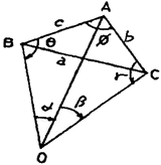
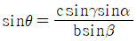
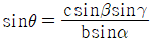
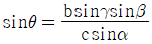
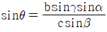
(정답률: 알수없음)
47. 다음 중 장거리 측량에서 가장 정밀한 거리 측량기는?
- invar
- EDM (전자파거리 측정기)
- 쇠줄자
- 천줄자
(정답률: 알수없음)
48. 그림과 같이 편각을 측정하였을 때 DE 의 방위각은? (단,
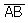
의 방위각 = 60° 임)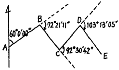
- 235° 34′ 16″
- 143° 03′ 34″
- 314° 34′ 25″
- 140° 13′ ⑤″
(정답률: 알수없음)
49. 다음 그림 중 댐의 집수구역을 표시한 것으로 가장 적합한 것은? (단, 음영으로 표시된 부분은 댐이 설치된 지역을 나타냄)
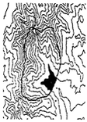
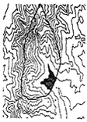
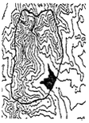
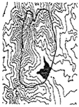
(정답률: 알수없음)
50. 지구의 적도반지름이 6370 ㎞ 이고 편평률이 1 / 299 이라고 하면 적도반지름과 극반지름의 차이는 얼마인가?
- 21.3 ㎞
- 31.0 ㎞
- 40.0 ㎞
- 42.6 ㎞
(정답률: 알수없음)
51. 다음 오차 중에서 최소제곱법의 원리를 이용하여 처리할 수 있는것은?
- 누적오차
- 우연오차
- 정오차
- 착오
(정답률: 알수없음)
52. 우리나라 지형도제작 시 사용하는 투영법은 무엇인가?
- 방위도법
- 원통도법
- 원추도법
- 평면도법
(정답률: 알수없음)
53. 그림과 같은 방법으로 교호수준측량을 하여 아래와 같은 결과를 얻었다. A점 표고가 55.123 m 일 때 B점의 표고는?
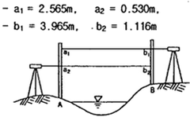
- 54.130 m
- 54.530 m
- 55.516 m
- 56.116 m
(정답률: 알수없음)
54. 지표면상 어느 한 지점에서 진북과 도북간의 차이를 무엇이라 하는가?
- 자오선 수차
- 구면 수차
- 자침 편차
- 연직선 편차
(정답률: 알수없음)
55. 두 점의 거리 관측을 A, B, C 세 사람이 실시하여 A는 4회 관측의 평균이 120.58 m 이고, B는 2회 관측의 평균이 120.51 m, C는 7회 관측이 120.62 m 이면 이 거리의 최확값은?
- 120.55 m
- 120.57 m
- 120.59 m
- 120.62 m
(정답률: 알수없음)
56. 다음 중 지형측량에 대한 설명으로 옳지 않은 것은?
- 등고선 간격이 “L" 이라는 말은 수직방향의 거리가 ”L" 이라 는 것이다.
- 주곡선의 간격은 소축척일 경우 축척분모수의 1 / 500 ~ 1 / 1000 로 정한다.
- 축척 1 / 50000 지형도의 주곡선 간격은 20 m 이다.
- 등고선은 분수선 (능선) 과 직각만으로 만난다.
(정답률: 알수없음)
57. 다음과 같은 삼각망에서 각 조건방정식의 수는?
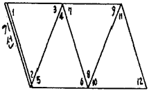
- 1개
- 3개
- 4개
- 6개
(정답률: 40%)
58. 수치지형도에서 두 측점 A 와 B 의 좌표를 획득하였다. 두 측점을 연결한 AB측선의 방향각은 얼마인가?
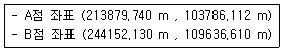
- 154° 30′ 43″
- 17° 26′ 25.4″
- 334° 30′ 43″
- 25° 29′ 17″
(정답률: 알수없음)
59. 삼각수준측량에서 두 점 사이의 거리가 먼 경우 특히 고려되어야 할 중요 오차는?
- 표척눈금의 부정확에 의한 오차
- 표척의 영점오차
- 습도에 의한 거리측정오차
- 양차
(정답률: 알수없음)
60. 기포의 감도 30″ 의 레벨로 시준거리 60m 를 관측할 때 기포관에서 1/4 눈금의 오차가 생길 경우 수준 오차는 어느 정도가 되는가?
- 1 ㎜
- 2 ㎜
- 4 ㎜
- 9 ㎜
(정답률: 30%)
4과목: 측량학
61. 다음 중 공공측량에 준하는 측량으로 공공측량으로 지정할 수 있는 일반측량의 기준으로 옳은 것은?
- 국토지리정보원장이 발행하는 지도의 축척과 상이한 축척의 지도 제작
- 국토지리정보원에서 시행하는 측량으로서 모든 측량의 기초가 되는 측량
- 측량실시지역의 면적이 1 km2 이하인 지형측량
- 지하시설물 측량
(정답률: 알수없음)
62. 측량용역대가의 기준에 관한 설명 중 틀린 것은?
- 측량용역대가의 기준은 국토해양부장관이 정한다.
- 측량용역대가의 산정은 직접측량비 및 간접측량비로 구분하여 산정한다.
- 측량용역대가의 기준을 정한 때에는 이를 관보에 고시하여야 한다.
- 측량용역대가의 기준을 정하고자 할 때에는 행정안전부장관과 협의하여야 한다.
(정답률: 알수없음)
63. 성능검사를 받아야 하는 측량기기로서 레벨은 성능검사를 몇 년 주기로 받아야 하는가?
- 3년
- 2년
- 1년
- 수시로
(정답률: 알수없음)
64. 성능검사기관은 성능검사결과 규정에 의한 성능기준에 적합하다고 인정되는 때에는 검사필증을 당해 측량기기에 붙여야 하는데 성능검사필증에 기재하여야 할 사항이 아닌 것은?
- 측량기기명 및 측량기기번호
- 검사유효기간
- 측량기기의 상각 년 수
- 측량기기성능
(정답률: 알수없음)
65. 측량협회 설립에 관한 설명으로 잘못된 것은?
- 회원의 품위보전, 측량에 관한 기술향상, 측량제도의 건전한 발전을 기한다.
- 협회는 법인으로 한다.
- 협회의 정관이 정하는 바에 따라 측량기술자만이 회원이 될 수 있다.
- 협회는 그 주된 사무소의 소재지에서 설립등기를 함으로써 설립한다.
(정답률: 알수없음)
66. 측량업등록의 결격사유 기준으로 틀린 것은?
- 국가보안법의 죄를 범하여 금고이상의 형의 집행유예 선고를 받고 그 집행유예기간 중에 있는 자
- 파산선고를 받고 복권되지 아니한 자
- 측량업의 등록이 취소된 후 3년이 경과되지 아니한 자
- 임원 중에 금치산자가 있는 법인
(정답률: 알수없음)
67. 측량의 기준에 대한 설명으로 틀린 것은?
- 지리학적 경위도는 세계측지계에 따라 측정한다.
- 측량의 원점값의 결정 등에 관한 사항은 국토해양부령으로 정한다.
- 측량의 원점은 대한민국경위도원점 및 수준원점으로 한다.
- 위치는 지리학적 경위도와 평균해면으로부터의 높이로 표시 한다.
(정답률: 알수없음)
68. 기본측량을 실시하기 위하여 타인의 토지나 건물에 출입할 경우에 대한 설명 중 옳지 않은 것은?
- 타인의 건물에 출입하고자 할 경우에는 권한을 표시하는 증표를 제시하여야 한다.
- 농작물이 있는 전답에 출입할 경우에는 미리 그 점유자에게 통지 하여야 한다.
- 점유자를 알 수 없을 경우에는 출입하여서는 안된다.
- 출입으로 인하여 피해가 발생하였을 경우에는 보상하는 것이 원칙이다.
(정답률: 알수없음)
69. 공공측량계획기관은 당해기관이 제작한 수치주제도를 몇 년 주기로 보완하여야 하는가?
- 1년 마다 1회 이상
- 2년 마다 1회 이상
- 3년 마다 1회 이상
- 4년 마다 1회 이상
(정답률: 알수없음)
70. 기본측량실시로 인한 손실보상의 협의 대상자는?
- 국토해양부장관과 국토지리정보원장
- 국토지리정보원장과 손실을 받은 자
- 측량계획기관과 국토지리정보원장
- 손실을 받은 자와 측량계획기관
(정답률: 알수없음)
71. 측량법에서 정의한 측량업의 종류에 속하지 않는 것은?
- 측지측량업
- 연안조사측량업
- 지도제작업
- 지적측량업
(정답률: 알수없음)
72. 측량기기 성능검사의 항목에서 금속관로 탐지기의 구조ㆍ기능 검사 항목이 아닌 것은?
- 액정표시부 이상 유무
- 송수신장치 이상 유무
- 탐지기, 케이블 이상 유무
- 광학구심장치 이상 유무
(정답률: 알수없음)
73. 기본측량에 관한 장기계획을 수립하여야 할 자는?
- 국토해양부장관
- 국토지리정보원장
- 측량심의회 위원장
- 대한측량협회장
(정답률: 알수없음)
74. 측량기기의 성능검사대행자는 등록사항에 변경이 있을 경우 변경등록 또는 변경신고를 하여야 한다. 다음 중 변경신고를 하여야 하는 사항은?
- 검사시설 또는 검사장비의 변경
- 기술능력의 변경
- 주된 영업소의 소재지의 변경
- 법인 대표자의 변경
(정답률: 알수없음)
75. 다음 용어의 정의 중 맞는 것은?
- “측량” 이라 함은 지도 및 연안해역 기본도의 제작 및 측량용 사진촬영을 제외한 토지 및 연안해역의 측량을 말한다.
- “측량계획기관” 이라 함은 기본측량에 관한 계획만을 수립하는 자를 말한다.
- “기본측량” 이라 함은 모든 측량의 기초가 되는 것으로서 국토해양부장관의 명을 받아 국토지리정보원장이 실시하는 것을 말한다.
- “측량성과” 라 함은 당해 측량에서 얻은 작업의 기록을 말한다.
(정답률: 알수없음)
76. 다음 중 난외주기에 포함되지 않는 사항은?
- 지명
- 도엽번호
- 축척
- 편집년도
(정답률: 알수없음)
77. 공공측량의 측량성과 또는 측량기록을 보관하고 일반인에게 열람시켜야 하는 자는?
- 국토해양부장관
- 국토지리정보원장
- 공공측량 계획기관
- 공공측량 작업기관
(정답률: 알수없음)
78. 측량표의 이전에 관한 신청의 접수는 누가 하도록 되어 있는가?
- 국토지리정보원장
- 측량표 이전 측량업체
- 도지사 또는 시장, 군수
- 관할 경찰서장
(정답률: 알수없음)
79. 지도 도식 규칙에 대한 다음 사항 중 옳은 것은?
- 지도의 도곽은 외도곽, 중도곽, 내도곽 으로 구분한다.
- 주기에 사용되는 문자는 한글, 한자 및 아라비어숫자로 한다.
- 지모의 표현은 등고선에 의하며 계곡선으로 표시하지 않는다.
- 선은 실선과 파선 및 점선으로 구분한다.
(정답률: 알수없음)
80. 다음 중 공공측량 및 일반측량에서 제외되는 측량이 아닌 것은?
- 수로업무법에 의한 수로측량
- 국지적 측량 또는 고도의 정확도를 필요로 하지 아니하는 측량
- 측량노선의 길이가 10 ㎞ 이상인 수준측량, 다각측량
- 지적법에 의한 지적측량
(정답률: 20%)